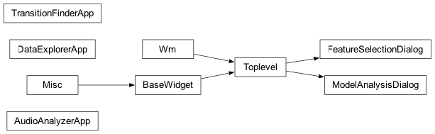

Project Architecture
This page provides diagrams visualizing the structure of the application.
Class Inheritance
This diagram shows the inheritance relationships between the main application classes. (Note: Requires Graphviz engine to be installed)

Note: This diagram might be simple if these classes only inherit directly from base objects or standard library classes like tk.Toplevel.
Module Dependencies (Simplified)
This diagram shows some key import relationships between modules. (Note: Requires Graphviz engine to be installed)
![digraph dependencies {
rankdir=LR; /* Layout left-to-right */
node [shape=box, style="rounded,filled", fillcolor=lightblue]; /* Node style */
edge [color=gray40]; /* Edge style */
/* Nodes (Modules) */
main_app [label="main_app.py"];
gui_builder [label="gui_builder.py"];
plot_manager [label="plot_manager.py"];
file_manager [label="file_manager.py"];
playback_manager [label="playback_manager.py"];
section_editor [label="section_editor.py"];
hmm_predictor [label="hmm_predictor.py"];
audio_analysis_wrapper [label="audio_analysis_wrapper.py"];
gmmhmm_modules [label="GMMHMM_modules", shape=folder, fillcolor=lightyellow];
audio_analysis_modules [label="audio_analysis_modules", shape=folder, fillcolor=lightyellow];
run_gmmhmm_trainer [label="run_gmmhmm_trainer.py"];
# Add other important modules if needed
/* Edges (Imports/Usage - Add more based on your code) */
main_app -> gui_builder;
main_app -> plot_manager;
main_app -> file_manager;
main_app -> playback_manager;
main_app -> section_editor;
main_app -> hmm_predictor;
main_app -> audio_analysis_wrapper;
audio_analysis_wrapper -> audio_analysis_modules;
hmm_predictor -> gmmhmm_modules;
run_gmmhmm_trainer -> gmmhmm_modules;
# You can add more specific edges if desired, e.g.:
# plot_manager -> audio_plotting;
}](_images/graphviz-ca3cf9958b5f271f7bc134d734167cc59f2bb10c.png)
Note: This is a manually created representation. For a fully automated dependency graph, specific analysis tools or scripts are usually needed.